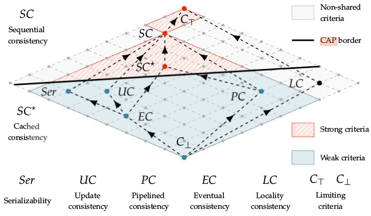
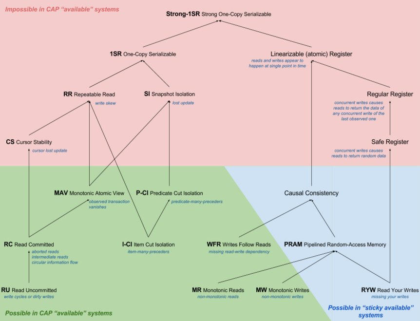
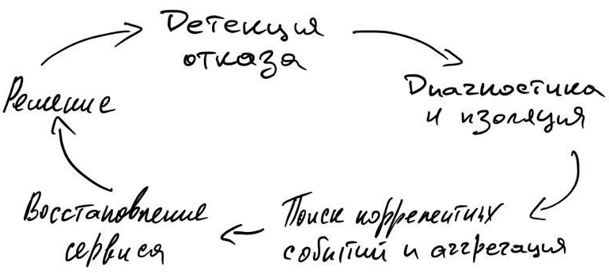

Высокая доступность: концепции, общие практики построения и сопровождения
- Концепции
- Избыточность
- SLA, SLO, SLI
- Организационные подходы для построения систем высокой доступности
- Не экономить на самом дешевом железе
- Согласованность
- Ответственность
- Устранение единых точек отказа (Single Point of Failure (SPOF))
- Консолидация серверов
- Автоматизация и оптимизиация
- Типовые конфигурации и общие репозитории
- Мониторинг и оповещение
- Измерение производительности
- Обучение и тренинги персонала
- Раздельные контуры
- Заключение
- Ссылки
Концепции
В прошлых статьях рассмотрели причины сбоев, типичный таймлайн сбоев, какие фазы там есть и какие действия обычно требуются, чтобы вернуть систему в стабильное рабочее состояние. Настало время погружаться в теорию HA глубже, но попытаться не распыляться на конкретные компоненты и решения, чтобы сохранить универсальность и иметь возможность применять их безотносительно частных случаев и реализаций.
Так, проектируя HA систему, прежде всего преследуют цель построить систему, которая бы за минимальные деньги держала определенную нагрузку и лишний раз не беспокоила (что в принципе тоже деньги). Соответственно, система должна быть:
-
Надежной: минимальный потенциал для сбоев.
-
Избыточной: использовать имеющиеся ресурсы, чтобы продолжать работать даже после сбоя без внешнего вмешательства.
-
Простой в управлении: все рабочие процессы, связанные с ней, понятны, зоны ответственности определены, на оперативные действия тратится минимум времени и усилий.
И уже тут начинаются противоречия. Чем меньше компонентов в системе и их связанность - тем она надежней, при увеличении избыточности увеличивается и связанность, а количество сбоев в системе растет. Почему так? Рассмотрим в последующей статье - "Высокая доступность: надёжность компонентов и систем".
Управление распределенной системой сопряжено с её же сложностью, которую хотя бы отчасти удаётся скрыть под абстракциями систем управления конфигурациями, возможностями управлять группами развернутых сервисов, оркестрацией кластеров, формированием виртуальных сетей и даже клаудов.
В предыдущей статье был приведён пример расчёта влияния увеличения доступности на выручку, получаемую организацией. В подходах обеспечения HA для системы, либо её части, следует поступать аналогичным образом, то есть доставлять доступность как новую функцию с некоторой ценностью для бизнеса, с возможностью посчитать её ROI. Тем самым доступность системы будет находиться в соответствии с потребностями бизнеса, его планами и возможностями. А обоснование работ, критерии достижимости и средства, будут понятны и для владельцев продукта, и для исполнителей.
Упрощенная схема влияния доступности на выручку:
При такой простой мотивации поступают так же просто:
-
анализируется текущий дизайн системы на возможные отказы;
-
составляется список сценариев отказа;
-
для каждого сценария указывается вероятность отказа и урон, им созданный;
-
важные сценарии для бизнеса фиксируются в требованиях;
-
проектирование решений по преодолению этих сценариев, оценивается стоимость реализации;
-
ревью решений, проверка гипотез по преодолению отказов;
-
реализация.
Потребность в высокой доступности может быть вызвана не только увеличением прибыли и уменьшения рисков, но и для соответствия определенным отраслевым и государственным стандартам и регламентам.
Основы
Отказоустойчивые системы, а значит системы с некоторой избыточностью, также являются подгруппой распределенных систем. При работе с ними инженеры иногда забывают о фундаментальных ограничениях или по привычке используют упрощенные модели, L. Peter Deutsh сформировал список из таких заблуждений в распределенных вычислениях:
-
Сеть надёжна.
-
Задержка (latency) сети равна нулю.
-
Пропускная способность бесконечна.
-
Сеть безопасна.
-
Топология не меняется.
-
Только один администратор.
-
Затраты времени на передачу равны нулю.
-
Сеть гомогенная.
Дополнение и объяснение этих заблуждений будет выходить за рамки данной статьи, но Вы сможете найти больше информации в публикации Fallacies of Distributed Computing: Explained от архитектора Arnon Rotem-Gal-Oz.
CAP теорема
В этих заблуждениях упомянули, что задержка по сети не равна нулю, что пропускная способность не бесконечна, что сама сеть не надёжна. В следствии того, что информация не может распространяться по разным узлам сети мгновенно и в любом объеме, спровоцировано появление большого количества моделей управления данными в распределенных системах, а на основе них появилась CAP теорема [cap]. Поверхностные детали теоремы рассматривать не будем, так как они интуитивно простые, прочтения статьи с Wikipedia достаточно. Сложность как обычно в деталях, а именно моделях консистентности, которые будут влиять на такие характеристики системы как: латентность, пропускная способность, величину RPO, способ решения проблем конкурентности.
Модели консистентности
Существует довольно большое множество моделей консистентности, которые описывают различные подходы при работе с данными в распределенной системе и естественно с больше, чем одним агентом, которые с ними работают. Так как статья посвящена высокодоступным системам, то мы подразумеваем, что клиенты получают доступ к сервису без ожиданий и попыток синхронизироваться друг с другом, то есть система работоспособна даже тогда, когда доступен остался лишь один узел. Это называется wait-free-атрибут распределенной системы. В следствии наличия wait-free атрибута, приходится раскрывать сам факт конкурентности доступа к данным в такой системе. Так как бизнес диктует свои потребности с некоторой областью возможностей, то при проектировании системы и мы можем выбирать, в каких случаях и как организовать проведение транзакций. Транзакций не в терминах СУБД, а в терминах предметной области, что важно.
Так выбираем между абсолютно строгим подходом доступа к данным и состоянием постоянной неконсистентности на узлах. Более формально: самый строгий способ достижения консистентности - использовать лишь один объект с данными и организовывать последовательный доступ к нему, если клиентов больше одного, то ни о каком wait-free там речи быть не может. Ослаблять требования этого способа можем через смягчающий критерий - раскрытие деталей конкурентной работы с данными, тем самым выстраивая правила (протокол) работы с ними, не допуская случаи появления неконсистентности в данных. Под протоколом подразумевается нахождение консенсуса для линеаризации проводимых транзакций.
Ниже представлена решетка моделей консистентности от самого слабого критерия до сильного. Граф разделён CAP границей, всё что ниже неё может использоваться в wait-free системах, всё что выше - нет.
Решётка моделей консистентности[ds1e]:

Как видно из изображения, в wait-free системе могу быть реализованы: update consistency модель, eventual concistency, pipelined consistency.
Отдельно хочется отметить serilizability, многие инженеры ошибочно считают, что она даст возможность забыть о проблеме консистентности проведения транзакций в распределённой системе. Она строже event consistency, но всё же не исключает проблем при разделении кластера (split brain), так как гарантирует проведение изолированных серий транзакций на локальных данных, а синхронизацию через shared object и арбитраж. Когда отделившийся узел возвращается в кластер, он будет вынужден вернуться к состоянию в момент сплита, либо потребует операцию по слиянию данных. Такая модель позволяет реализовать хорошие показатели производительности и предоставляет отличный контроль данных. Именно поэтому получила столь широкое распространение и для работы с важными данными (мед. записи, банковские транзакции), но как всегда есть нюансы.
Сверху находятся модели с жесткими критериями последовательности транзакций и линеаризацией, получается не wait-free система, но данные однозначно останутся консистентными в любой момент времени. Для более более подробного знакомства с этими моделями рекомендую заглянуть в [ds1e].
ACID
Большинство с ACID должны быть знакомы в общих чертах и даже в трактовках. Если нет - есть wiki: ACID_(computer_science). Продолжаем тему применимости принципов и моделей в построении HA систем. Ниже граф уровни изоляции транзакций (ACID) на основе CAP моделей, источник [hat] (нарисовал Alexey Grischenko): 
Что это значит:
-
граф - корень (Strong-1SR) - наивысший уровень "изоляции" транзакций (все транзакции последовательны), чем дальше от корня, тем ниже уровень изоляции транзакции, тем меньше нужно ресурсов на её проведение в распределённом приложении
-
красное - модель невозможно использовать в HA системе
-
зелёное - используется
-
синее - используется для тех случаев, когда клиент работает лишь с одним узлом, либо сам может выполнять роль сервера.
Практическое использование. В большинстве классических РСУБД по умолчанию используется serializable модель, иногда и как наиболее строгая, пример PostgreSQL [pgsql-tr]. Microsoft SQL Server [mssql-si] и Oracle [oracle-si] позволяют повысить изоляцию до snapshot isolation.
В принципе, когда говорят про CAP и ACID, зачастую подразумевают не serializable, а linearizable консистентность. Нюанс тут в том, что большинство РСУБД используют serializable или snapshot уровни изоляции с Multivesion concurrency control (MVCC), но не способны реализовать линеаризуемость транзакций, так как это сильно снизит скорость конкурентного доступа к данным. В этом и есть неочевидный и мало кому знакомый нюанс использования этих терминов.
Те, кто уже хорошо знаком с ACID, могут обратить внимание, что сериализуемые транзакции, являющиеся "эталоном" для достижения целостности и истинности данных в принципе для большой распределенной системы, не подходят из-за жестких ограничений. При большом количестве узлов требует и больших затрат ресурсов, и времени, нет толерантности к разделению(CAP). Это и вызвало появление AP NoSQL систем таких как Amazon Dynamo, Cassandra.
BASE
Обязано появлением систем на основе eventual consistency, для которых приемлемо находиться в неконсистетном состоянии какое-то время и отдавать клиенту неконсистентные данные, тем самым сохраняя доступность. BASE - Basically Available, Soft state, Eventual consistency. По графу моделей консистентности видно, что они не такие жесткие, как системы на serializable модели. Пример BASE-баз данных: CouchDB, Amazon SimpleDB, Amazon Dynamo, Riak.
PACELC
Ещё одна post-CAP теорема, а фактически её расширение. Созданное, чтобы в общую модель добавить современные NoSQL решения. Была предложена в работе "Consistency Tradeoffs in Modern Distributed Database System Design" [abadi]. Трактовка из оригинала:
A more complete portrayal of the space of potential consistency tradeoffs for DDBSs can be achieved by rewriting CAP as PACELC (pronounced “pass-elk”): if there is a partition (P), how does the system trade off availability and consistency (A and C); else (E), when the system is running normally in the absence of partitions, how does the system trade off latency (L) and consistency (C)?
Теперь в рамках одной теоремы можно более точно указать "классы" хранилищ и описать требования к ним. Классические ACID системы - PC/EС. Сохраняют целостность кластера (P), консистетность (С), но вынуждены жертвовать доступностью и задержками ради (E) консистентности (С). Современные NoSQL, в лице MongoDB, Amazon Dynamo, Cassandra, Aerospike являются PA/EL: уcтойчивы к сплитам (P), сохраняют доступность (A), но жертвуют консистентностью ради (E) низких задержек (L).
- NOTE
-
Выше приведены модели, используемые по умолчанию. Большинство современных СУБД поддерживают конфигурирование уровней коснистентности, которые могут зависеть от настроек сервера, базы, сессии. Обращайте на это внимание при работе с ними, а тем более при выборе СУБД.
Conway’s law
Отдельно хочется упомянуть Conway’s Law.
organizations which design systems … are constrained to produce designs which are copies of the communication structures of these organizations.
Строя распределённую систему, формируйте команды под задачи, а не наоборот. Иначе система будет иметь такие же проблемы, что и здесь.
Существует множество других законов и следствий, которые прямым или косвенным образом связаны с распределенными и высокодоступными системами, но вместить их может, пожалуй, целая энциклопедия (например - Encyclopedia of Parallel Computing), так что здесь ограничимся лишь самыми базовыми.
Избыточность
Как ранее было описано, избыточность в системе позволяет продолжить работу после сбоя и даже без потери данных. Избыточность в компонентах системы может быть на разных уровнях, всё зависит от того, для какого сценария сбоя эти избыточные компоненты предназначены. Примеры создания избыточности:
-
зеркалирование дисков - RAID [wiki_raid] или Redundant Arrays of Independet Disks
-
резервные блоки питания серверов
-
дополнительные сетевые интерфейсы, коммутаторы
-
резервные линии электроснабжения, питание серверов через источники бесперебойного питания
-
избыточность в кластере сервисов, обычно он называется высокодоступным кластером или HA cluster.
Если блок компонентов содержит в себе избыточность и может без внешнего вмешательства переключаться на избыточный (резервный) элемент, который и возьмет на себя нагрузку. Такой компонент называется устойчивым к сбоям (fault-tolerant). Далее рассмотрим стратегии и прочие нюансы при переключении на избыточные элементы системы после сбоя, а также конфигурации отказоустойчивых кластеров.
Толерантность к отказам (fault tolerance)
Как ранее уже упоминалось, не все отказы можно обработать, поэтому фокусируются лишь на некоторых, ориентируясь на потребности. Ниже четыре самых главных подхода обработки отказа:
-
Masking tolerance - обработка отказа без существенных изменений клиента, агента или связанного компонента, используется в критически важных системах.
-
Nonmasking tolerance - сбой может временно повлиять на связанный компонент, но без эскалации сбоя выше него, как правило это видно по увеличению таймингов.
-
Fail-Safe - обработка отказа с прерыванием операции в безопасном для остальных состоянии. Самоликвидация ракет, мин, плавное торможение самоуправляемого автомобиля и есть fail-safe.
-
Graceful degradation - после сбоя система не может скрыть последствия сбоя, не может восстановиться, функционирует с ограничениями, сниженной производительностью. Пример: использование резервного канала с меньшей пропускной способностью и более высокими задержками, временное нарушение консистентности, которое можно считать приемлемым, недоступность части сервисов.
Если последствия отказа нельзя скрыть от клиента или зависимых компонентов (невозможно, слишком дорого, не критично), то нужно его хотя бы локализовать, переведя и функционирование зависимого компонента в ограниченный режим. Такая локализация поможет определить сбой в системе более точно, быстро, проще будет обработать.
Ниже рассмотрим самые популярные схемы организации избыточности кластеров для обработки отказов.
Active-Active
Один из самых популярных вариантов организации высокодоступных кластеров при построении Web-сервисов. Все узлы в активном использовании, балансировщик раскидывает трафик в зависимости от его политики (random, round robin, etc.). В случае, если один из узлов перестал отвечать, балансировщик сам может перекинуть коннект на другой узел, тем самым избежав потери данных и с нулевым даунтаймом. Плюсы:
-
уменьшение даунтайма, так как фактический узел невидим для клиента
-
эффективное использование оборудования, реализация полной его ёмкости
-
легко наращивать нагрузку
-
тестирование аварийного переключения за балансировщиком менее рискованное
Минусы:
-
организация такой архитектуры сопряжена с определенными трудностями или вообще невозможна в случае хранения состояния (сессии) на стороне сервера. Не всегда можно привязать юзеров к конкретному серверу за балансировщиком, failover также будет сопряжен с определенными проблемами.
-
возможны коллизии данных без роутинга клиентов на определенные узлы
-
следует крайне аккуратно рассчитывать запас по производительности в случае выхода из строя одного из узлов, производительность может упасть не линейно и вызвать отказ и второго узла.
Примеры: кластера WEB, REST серверов.
Multi-Master
Сходный принцип с Activ-Active, за тем исключением, что балансировщик обычно не используется, обычно клиент уже знает несколько адресов Master узлов, к которым и пробует подключаться. В случае невозможности подсоединиться к первому, пробует следующий адрес и т.д. Встречается в двух основных случаях: процессинг большого количества данных (батчи, стримы), отказоустойчивые БД.
В случае процессинга мастер-узлы сами выполняют лишь координационную функцию, обмениваясь между собой метаданными и занимаясь скедулингом (Spark, Flink)
В базах данных: Cassandra, MySQL с Multi-Master, Aerospike, MSSQL c P2P transaction replication.
Cold Standby
Один активный компонент предоставляет нужные для системы функции. Когда случается его отказ, cold standby компонент переходит в режим hot и замещает предыдущий. В системе может быть более чем два компонента, тем самым повышая её живучесть. Её плюс в том, что в такой системе деградация очевидна и скорость отказов (failure reate) константна, что упрощает оценку и прогнозирование. Практически был вытеснен, остался в legacy c монолитами.
Hot Standby
В этом случае standby компонент, который защищает основной, также включен. Данные на standby реплицируются с секундными интервалами. В случае отказа основного компонента, происходит переключение (failover) на второй, в случае успешного переключения downtime стремится или равен нулю. Но есть следующие нюансы:
-
Из-за того, что они находятся под разной нагрузкой у них могут быть и разные скорости отказа.
-
Подразумевается, что механизм переключения абсолютно надёжен, если нет - система также подвергнется отказу
-
В случае отказа standby компонента система не затронута.
В качестве примера такой архитектуры можно привести: PostgreSQL, MySQL, MSSQL. HDFS где инстансы используются NameNode в таком режиме. Также практикуется развертывание Cassandra кластеров в multizone-Region в AWS.
Master-Replica
Вариация Hot Standby. Все узлы кластера проверяют друг друга на доступность по heartbeat. В случае обнаружения недоступности master узла инициализируют выбор нового и проводят failover. Узлы-реплики могут использоваться для чтения. Пример: MongoDB (replica set), Redis, MSSQL, MySQL, PostgreSQL, RabbitMQ, Kafka (но есть нюансы).
2N избыточность (2N Redundancy)
Схема, напоминающая Hot Standby. Все избыточные юниты проверяют доступность друг друга. При обнаружении, что активный (эксплуатируемый) юнит недоступен, инициализируются аварийное переключение (failover). Ранее была распространена в телекоме, как схема увеличения надёжности через использование аналогичного железа, но различного ПО, выполняющего аналогичные функции, чтобы избежать отказа всех узлов в критически важной системе с одной и той же ошибкой в ПО. Сейчас подобная схема используется преимущественно в инфраструктуре датацентров для управление питанием.
Трёх-компонентное большинство с голосованием (Triplex-Duplex)
В эксплуатации находятся три компонента, вывод от всех трёх компонентов сравнивается между собой, если один из компонентов выдаёт отличное от большинства значение, то он больше не может рассматриваться как достоверный и выводится из эксплуатации. Компоненты не подлежат ремонту во время эксплуатации, только замена. Схема используется в критически важных системах: авионика, медицинские системы, системы жизнеобеспечения, индустриальные системы повышенной надёжности.
Аварийное переключение (failover), стратегии и практики
Для аппаратных компонентов failover обрабатывается в драйверах системы, которые предоставляет вендор вместе с железом. Нормальная обработка такого failover не вызывает прекращение работы оборудования и не вызывает перезагрузку ОС.
Если сбой происходит в кластере, миграция между сервисами внутри него должна удовлетворять следующим критериям:
-
Прозрачность. Аварийное переключение после восстановления не должно мешать работе клиентов. Так сбой у master/active узла в HA кластере должен повлечь переброс трафика на резервный standby узел (который становится active) и установления соединений от клиентов к этому серверу, после чего возобновляется их нормальная работа. Опционально возможно выполнение повторных процедур аутентификации.
-
Время переключения. В идеале не должно приводить к длительной остановке зависимого клиента. Так например в HA
replica setкластерах c небольшим количеством узлов, secondary узлы через определенные промежутки времени опрашивают primary, если он недоступен, то выбирают (election) новый primary узел, который принимает на себя клиентов или управляет взаимодействием с ними. Период времени (heartbeat rate) между опросами обычно настраиваемый и не больше двух минут. Таким образом, клиент, потеряв соединение с primary (по его таймауту), пытается соединиться с каким-нибудь другим узлом из кластера, который можно было бы идентифицировать как новый primary. В этом случае, согласованно и рационально настроенные таймаут соединения, hearbeat rate и на клиенте имеются retry политики и backpessure подход (о них позже), то переключение на новый primary сервер должно занять максимум несколько минут и не привести к потере данных для клиента. -
Автоматизация. Переключение на избыточный узел желательно осуществлять в автоматическом режиме, чтобы способствовать уменьшению MTTR. Если внутри кластера сервера имеют разные статусы, то механизм выбора главного сервера также должен запускаться автоматически.
-
Гарантированный доступ к предоставляемому сервису. После аварийного переключения клиент должен иметь доступ к тем же самым данным (но есть нюансы в виде консистентности данных на различных узлах) и тем же самым сервисам, которые предоставлялись прошлым сервером в этом кластере.
Управление отказами
Таймлайны отказов рассматривали ранее, сейчас вкратце: Вкратце: 
Современные Agile подходы с короткими циклами релизов, CI/CD практики и прочий Ops-инструментарий очень сильно упростили работу с отказами, позволяя эксплуатировать большие системы существенно меньшим количеством людей.
Чек-лист того, чтобы упросить детекцию, диагностику отказов, а также оценку эффекта от их возникновения:
-
healt-check сервисов
-
сбор логов
-
сбор метрик
-
определение пороговых значений (thresholds) для выше обозначенных метрик
-
оповещения для администраторов, сотрудников поддержки занятых в эксплуатации, инцидент- трекинг сервис (PageDuty, VictorOps)
-
использование фреймворков для трейсинга
-
автоматизация обработки отказов
-
организация дежурств, уровней саппорта, политик экскалаций
-
журнал postmortem с отчётами о развитии крупных отказов, описание поиска решения, что сделано, чтобы предотвратить в будущем. Не забывать им делиться с другими командами.
SLA, SLO, SLI
Есть несколько подходов по работе с документами связанными с доступностью системы. Различия в них не концептуальные, но связанные с бизнес-моделью организации и внутренними процессами.
| Service Level Agreement (SLA) |
договоренность об уровне сервиса |
| Service Level Objectives (SLO) |
цели по предоставлению уровня сервиса (внутренние требования (документы)), является более строгим набором требований чем SLA, так как нарушение последнего может привести к явным финансовым и репетиционным потерям. |
| Service Level Indicators (SLI) |
метрики доступности системы |
SLA - соглашение между лицом, сервис представляющим и лицом, являющимся его клиентом. Может быть оформлено в виде документа, где явно прописаны обязанности первого лица, условия, исключения если такие есть. Чаще всего там прописывается: процент доступности, MTTR, график обслуживания когда сервис может быть недоступен либо функционировать в ограниченном режиме, производительность сервиса, размеры штрафа в случае несоблюдения указанных ранее характеристик и свойств. Рекомендуется в SLA указывать те характеристики сервиса, которые влияют непосредственно на выручку, то есть фокусироваться на наиболее приоритетных и для клиентов, и для инженеров.
SLO - внутренний документ, описывающий цели по доступности. В нём содержатся те же самые характеристики и свойства системы, что и в SLA, но с более строгими значениями, что бы иметь запас по надёжности между целью и договорённостями с клиентами. Источник информации по пороговым значениями (thresholds) для систем мониторинга и оповещения.
SLI - текущие измеряемые показатели сервиса. Там могут быть типичные RPS, QPS, latency, пропускная способность, так и собственные замеры доступности. Между различными внутренними сервисами, плюс с внешних для системы узлов.
Эти три документа позволяют не теряться в соглашениях, целях и текущих значениях. Люди, ответственные за коммуникации с клиентами точно знают, что предоставляют. Инженеры поддерживают и проектируют решения с четко обозначенными ограничениями. Более подробно с темой SLA, SLO, SLI можно ознакомиться в книге "Site Reliability Engineering" (2016) [sre], написанной инженерами Google.
Организационные подходы для построения систем высокой доступности
Если желаете увеличить доступность системы для внешних пользователей, всегда начинайте анализ с самого верхнего уровня, чтобы не оказаться в ситуации, когда балансировщик трафика с отказоустойчивым кластером стоит за каким-то жалким единственным роутером, который работает лишь по стечению случайностей. Эту проблему всегда необходимо рассматривать именно со стороны пользователя системы или сервиса, который к ней обращается, а не изнутри.
Не экономить на самом дешевом железе
Выбирать железо стоит исходя не только из его минимальной цены за определенные возможности, а по результатам расчёта ROI, где учитывается его непосредственная цена, его время эксплуатации в системе, наличие специалистов для его обслуживания, гарантийного сервиса и близость поставщиков для его замены по гарантии или для обновления.
Согласованность
Компоненты системы должны быть согласованы между собой, например:
-
Емкость канала должна быть расчётной для узла который на ней висит.
-
Рабочие инстансы должны иметь столько RAM, которая бы соответствовала работающему там приложению с учётом им потребляемой памяти (в т.ч. установленным лимитам).
-
Сервера должны иметь такую ёмкость локального диска для объема операций записи за период, после чего будут действовать механизмы retention во избежание отказов от появления ошибок.
-
Приложения должны использовать хранилища с учётом их особенностей и ограничений, например: максимальный размер базы, количество столбцов, максимальный размер записи.
-
Клиенты и серверы должны использовать одни и те же версии протоколов и соответствовать друг другу по API.
-
Надёжность отдельных компонентов тоже должна быть обоснована и согласована между собой.
График обслуживания должен быть согласован с временем, когда на систему минимальная нагрузка, либо позволяет SLA. Если это промежуточная система для её клиента, то зависимая система должна учитывать SLA системы от которой зависит и в случае потребности иметь некоторую изоляцию от последней, чтобы предоставить сервис если это возможно, или хотя бы корректно отработать отказ.
Ответственность
Ни вендор, ни поставщик программного обеспечения, ни программисты не могут построить высокодоступную и комфортную для пользователя системы. Построение такой системы - это тестирование, интеграция, испытания, верификация приложений и рабочих процессов. Наивно полагать, что развернув определенное ПО на рабочем контуре, вы получите высокодоступную систему, так как это: максимальный MTBF и минимальный MTTR, которые доводятся до нужных значений именно отладкой рабочих процессов сотрудников. Не стоит уповать и на организацию кластеров и средства репликации данных. Без своевременных вмешательств и организации работ по выводу из состоянии деградации система не может быть отказоустойчивой и высокодоступной. Формируйте SLA, SLO, ведите SLI.
Устранение единых точек отказа (Single Point of Failure (SPOF))
Анализируйте систему на присутствие в ней элементов, выход из стоя которых может привести к невозможности продолжить исполнение даже в ограниченном режиме. Проще всего начать с анализа цепочек исполнения, зависимостей или data-flow диаграмм. Достаточно пройтись по ключевым обслуживаемым процессам, чтобы уже появилось представление о самых слабых узлах в цепочке. Но далеко не каждый компонент, представляющий собой SPOF, возможно дублировать или устранить иногда по финансовым причинам (слишком дорогое дублирующее железо), ограничения физические (например только один вводной канал) или концептуальное ограничение (например CAP-теорема[cap])
Консолидация серверов
Вместо использования множества мелких серверов, иногда имеет смысл использовать лишь несколько, но гораздо более мощных для того, чтобы:
-
упростить топологию и уменьшить количество узлов
-
сократить затраты на обслуживание (обновление, резервное копирование и т.п.)
-
улучшить производительность из-за уменьшения затрат на передачу данных по сети
Инструментарий для виртуализации и оркестрацией серверов упрощает управление распределенной инфраструктурой, еще и с прослойкой абстракции над железом, но для части задач (такие как базы данных) или большие legacy системы, всё ещё имеет смысл.
Автоматизация и оптимизиация
Чем выше уровень автоматизации - тем меньше требуется время на операции, меньше ответственных за них. Ускорение и автоматизация цикла "сборка-тестирование" добавляет удобства для инженеров, увеличивает количество таких циклов за единицу времени, время тратится более эффективно. СI/CD подходы сильно упрощают раскатывание новых релизов по контурам, тем самым уменьшая и MTTR, и time to market (TTM).
Типовые конфигурации и общие репозитории
Унификация сильно помогает для уменьшения времени на проектирование, тестирование и развертывание новых сервисов. Общие конфигурации и артефакты сильно помогают в этом на всех стадиях от идентификации потребности, до развертывания в production. Чек-лист:
-
список рекомендованного ПО для production
-
репозиторий скриптов развертывания инфраструктуры - Infrastructure as Code
-
репозиторий артефактов (Artifactory, Bintray, GitLab)
-
реестр типовых образов (Docker Registry, Amazon ECR, GitLab Container Registry)
-
типовые шаблоны для security groups
Мониторинг и оповещение
Без мониторинга невозможно разобраться в каком состоянии находится система. Каждое запущенное приложение представляет без сбора метрик, health-checks и логов представляет собой чёрный ящик: что-то подаётся на вход, что-то поступает на выход с не всегда очевидными side-effects. Чтобы это избежать используют health-check интерфейсы и сбор метрик.
Через Health-check интерфейс проверяют живо ли приложение, вместе с пустым ответом приложение может предоставлять ещё и некоторую информацию о своём состоянии. В зависимости от подходов и вариантов процедуры развертывания организуют и автоматические операции, там может быть: перезапуск, оповещение оператора, добавление информации об этом в журнал.
Метрики - одномоментные показатели состояния ПО и железа, могут быть в виде счётчиков, таймеров, гистограм и т.п. Все они помогают понять в каком состоянии система была, находится и какова динамика изменений. Кроме системных метрик (RPS, QPS, latency, заполненность очередни и т.п.) могут собираться и бизнесовые метрики с информацией из предметной области бизнеса.
Собрать метрики мало - нужно ещё ими воспользоваться, в этом помогают различные инструменты их отображения: Kibana, Grafana, Prometheus, Datadog. Быстрый и удобный UI с дашбордами для просмотра информации о метриках - хорошая инвестиция в комфорт работы и уменьшение MTTR.
На основе используемых метрик, их граничных значений, алгоритмов определения аномалий, а также появления определенных записей в логах, выстраивается система оповещения о внештатных ситуациях и инцидентах. Слишком строгие настройки могут вызвать ложные оповещения чем будут раздражать операторов, инженеров и портить отчётность. Слишком высокий порог может не показать деградацию системы, что тоже не хорошо. Следует искать приемлемый баланс, следуя рекомендациям вендоров, поставщикам ПО, а также используя инженерные оценки.
Измерение производительности
Рассуждая о доступности какого-то сервиса для клиента, мы имеем ввиду, что все компоненты в цепочке исполнения должны иметь время реакции из конкретного временного интервала, иначе уровень сервиса для клиента может упасть до неприемлемо низких значений. Чтобы не столкнуться с непредвиденной деградацией производительности в поддержании высокодоступной системы должны быть использованы:
-
бенчмаркинг отдельных компонентов системы
-
нагрузочное или стресс тестирование - подача нагрузки на систему или её изолированную часть и замеры, чтобы определить граничные возможности системы обработать выданную нагрузку. Качество проводимого тестирования сильно зависит от возможности эмулировать паттерн нагрузки как и на боевой системе, организации замеров.
-
сбор и анализ метрик производительности во время эксплуатации, могут быть как системные метрики, так и из предметной области.
-
stability testing - продолжительное по времени тестирование, проводимое с симуляцией различных условий эксплуатации.
Результаты тестирования сохраняются с указанием версии ПО или железа, чтобы в будущем иметь возможности системы от релиза к релизу. Помогает выявить внесённые изменения, повлекшие к деградации производительности.
Последовательные и систематичные меры дадут возможность не только видеть состояние системы под нагрузкой, понимать границы той самой доступности предоставляемого сервиса, но и видеть причинно-следственные связи от изменений в самой системе или её реакцию на изменение нагрузки. Чем больше будет похожа тестовая нагрузка на нагрузку во время эксплуатации, тем ближе будет соответствие результатам в эксплуатации. Кроме того, обладая данными о фактической производительности компонентов, появляется возможность более точно рассчитать потребности в ресурсах при горизонтальном масштабировании.
Обучение и тренинги персонала
Обучайте людей пользоваться инструментами, рассказывайте об их возможностях влиять на систему, какова их роль в процессе и за что они отвечают. Занятый в эксплуатации человек будет действовать более уверенно и быстро, когда он знает о своих возможностях.
Раздельные контуры
Чтобы процессы разработки и тестирования не влияли на саму эксплуатируемую систему, необходимо разделять среды с различной их целью. Обычно используются следующие:
-
sandbox для разработчиков где тестируется новый софт, технологии, железо
-
dev контур для работы над кодом, dev-тестирования, если невозможно развернуть систему для теста на локальном компьютере инженера, в следствии этого должен относительно хорошо поддерживаться, чтобы не замедлять работу инженеров
-
QA контур, может быть несколько, для ручного тестирования, регрессионного, интеграционного, конфигурация ещё ближе к production. Может иметь реплицированные или восстановленные из резервных копий данные с production.
-
Staging - практически повторяет по топологии production и его возможности. Все изменения тестируются перед тем, как попасть в эксплуатационный контур. Мониторинг, сбор логов и метрик практически всегда обязателен тут. Играет важную роль для эмуляции случаев произошедших в эксплуатации и проверке гипотез.
-
Producton - он же эксплуатационный контур. Контуров может быть несколько для создания избыточности, если она требуется, раскатывают обновления в таком случае последовательно, чтобы иметь возможность быстро переключиться на резервный. Либо избыточный контур находится в другом дата-центре, чтобы иметь возможность обработать отказ всего ДЦ.
Заключение
Рассмотрели, пусть и крайне поверхностно, но практически все (я надеюсь) концепции и общие подходы построения высокодоступных систем. Как выше уже определили, надёжность - это максимальное время работы между сбоями и минимальное время восстановления. За всем этим скрывается:
-
Надёжность компонентов (будет в следующей статье из серии)
-
Работа с концептуальными ограничениями в распределённых вычислениях.
-
Избыточность компонентов, чтобы иметь устойчивость к сбоям эксплуатируемых узлов.
-
Прозрачный или хотя бы быстрый процесс аварийного переключения.
-
Максимально быстрый процесс от идентификации сбоя, до его решения.
Что ещё рекомендуется изучить по данной теме:
-
Большая часть тем гораздо глубже описана в книге "Site Reliability Engineering"[sre]
-
По эксплуатации и дизайну приложений в AWS рекомендую "AWS Well-Architected Framework"[aws-waf]
-
Отличная книга "Distributed Systems. Concurrency and Consistency (Matthieu Perrin, 2017)" [ds1e], которая поможет при выборе инструментария, независимо on-premise, cloud или собственного решения. Отличный гайд по "нюансам" и подводным камням, которые иногда не заметны под маркетинговыми лозунгами.
-
Знакомство с основами распределенных алгоритмов, границами их применимости, рекомендую начать с Distributed Systems. An Algorithmic Approach (2013). В книге рассказывается о таких важных алгоритмах, как: выбор мастера в кластера, основах трейсинга с использованием алгоритмов обхода дерева, скедулинга задач среди воркеров.
Ссылки
-
[std610] IEEE Standard Glossary of Software Engineering Terminology
-
[hadr] High Availability and Disaster Recovery: Concepts, Design, Implementation, (Klaus Schmidt, 2006)
-
[cap] CAP Theorem and Distributed Database Management Systems (Syed Sadat Nazrul, 2018)
-
[wiki_bm] wiki: Benchmark (computing)
-
[wiki_raid] wiki:RAID
-
[hat] Highly Available Transactions: Virtues and Limitations (Extended Version) (Peter Bailis, Aaron Davidson, Alan Fekete, Ali Ghodsi, Joseph M. Hellerstein, Ion Stoica, 2013)
-
[ds1e] Distributed Systems. Concurrency and Consistency (Matthieu Perrin, 2017)
-
[mssql-si] Snapshot Isolation in SQL Server
-
[oracle-si] Oracle DB. Isolation
-
[abadi] Consistency Tradeoffs in Modern Distributed Database System Design (Yale Univercity, 2012)
-
[sre] Site Reliability Engineering (Betsy Beyer, Chris Jones, Jennifer Petoff & Niall Richard Murphy), 2016
-
[aws-waf] AWS Well-Architected Framework
Alexander Salimonov
Engineering Manager
Distributed and data-intensive sytems, databases, data processing, cloud computing.